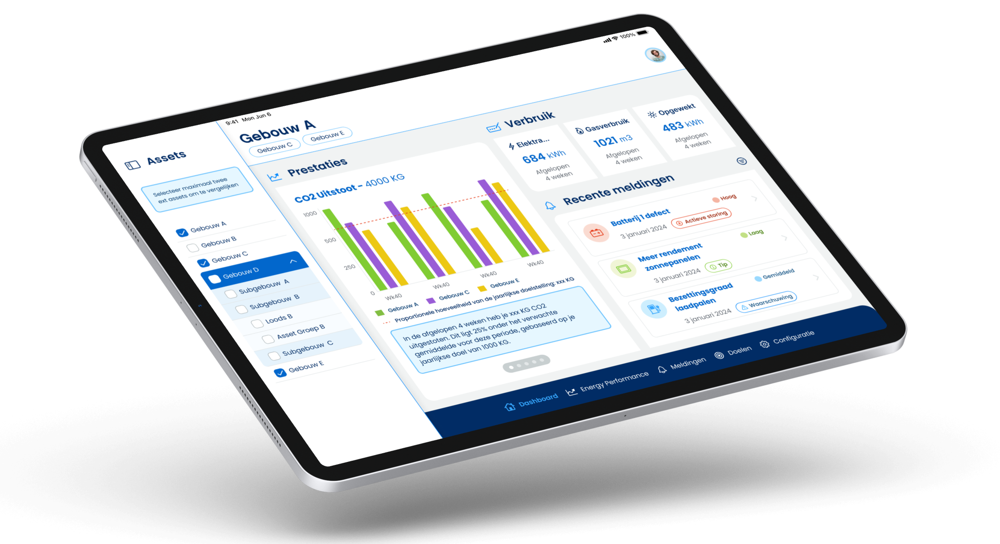

Hoppenbrouwers Energie & techniekSenior Product Designer
Eén dashboard dat zakelijke klanten grip geeft op verbruik, doelen en meldingen
De Energy Manager app helpt zakelijke klanten van Hoppenbrouwers het energieverbruik van hun gebouwen en installaties te beheren. Ik ontwierp de MVP van onderzoek tot gevalideerd prototype, inclusief het design system waarop de app verder is gebouwd.
- RolSenior Product Designer
- ScopeMVP voor tablet
- GevalideerdTwee testrondes met klanten
- StatusLive

De opdracht
Hoppenbrouwers wilde zijn zakelijke klanten een Energy Manager app bieden: één plek waar zij het energieverbruik van hun gebouwen en installaties kunnen volgen en bijsturen, ook met het oog op duurzaamheidsdoelen en kostenreductie. De vraag aan mij was om die app vanaf nul te ontwerpen en te valideren met de mensen die hem dagelijks zouden gebruiken.
Het probleem dat er echt zat
Uit interviews met klanten en stakeholders bleek dat gebruikers niet zaten te wachten op nóg meer data. Ze wilden grip: doelen kunnen stellen, per locatie zien of ze op koers liggen en direct een melding krijgen bij afwijkingen of storingen. Rapportage moest daarbij eenvoudig zijn, om energiebeheer intern te kunnen verantwoorden. Het probleem was niet een gebrek aan meetgegevens, maar het ontbreken van overzicht en sturing.
Mijn aanpak
Op basis van de interviews werkte ik drie persona's uit. Samen met de stakeholder kozen we de asset manager als uitgangspunt voor de MVP, op tablet, omdat daar de grootste behoefte lag. Na een benchmark van vergelijkbare applicaties, gericht op grafieken, navigatie tussen locaties en datavisualisatie, bracht ik de user flow in kaart en ontwierp ik wireframes voor drie flows: dashboard, energieprestaties en doelen.
Een eerste validatieronde leverde vier aanscherpingen op, zoals verbruik kunnen vergelijken en meldingen niet alleen inzien maar ook toewijzen. Die verwerkte ik in een hi-fi prototype, gebouwd op een design system dat ik opzette vanuit de nieuwe huisstijl van Hoppenbrouwers.

Het resultaat
De usability tests bevestigden de opzet: gebruikers waardeerden het inzicht per asset op meerdere niveaus en vonden het ontwerp helder. Verbeterpunten, zoals extra begeleiding bij eerste gebruik en meer rapportageopties, nam ik mee in de laatste iteratie. Op basis van de reacties van klanten besloot Hoppenbrouwers de app verder uit te rollen. De Energy Manager app is inmiddels live.
Wat dit laat zien
Een product vanaf nul ontwerpen in een korte doorlooptijd: het echte probleem achter de vraag vinden, scherpe keuzes maken over doelgroep en platform, en een design system neerzetten dat de basis vormt voor de verdere ontwikkeling.